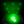
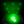

En esta sección encontraréis información sobre los distintos fantasmas que pueden aparecer en vuestras investigaciones, además de cómo identificarlos y qué los hace diferenciarse de otros de su misma especie.
Antes de entrar de lleno con los fantasmas, hay una serie de conceptos que pueden ser útiles para identificar a cada fantasma.
A la hora de asignar el fantasma que te vas a encontrar en tu contrato se generan una serie de valores como el género, la edad y el nombre del fantasma. Estas características son irrelevantes generalmente a la hora de identificarlos (salvo algunos casos concretos), pero sí conviene tenerlos en cuenta para saber cómo funcionan algunas mecánicas del juego.
➼ El género del fantasma se asigna en un 50%/50% (esto es irrelevante de momento).
➼ La edad es un número aleatorio generado entre 2 y 90 (esto sí será relevante más adelante).
➼ El nombre es generado mezclando dos listas. Una de nombres y otra de apellidos (esto es irrelevante pero puede generar nombres como Michael Jackson, lo cual es gracioso heehee).
***WIP*** ¡Ah! Casi se me olvida. Cuando entréis a investigar no tendréis las manos vacías. Dispondréis de un equipamiento con el que seréis capaces de recopilar las distintas pruebas que puede dejar cada fantasma. Cada uno de ellos muestra una combinación única de tres pruebas que solo pertenecen a ese fantasma. Por ejemplo, la banshee siempre mostrará una combinación de Ultravioleta , Orbes  y D.O.T.S. . Estas pruebas serán recopiladas por equipo especializado, por ejemplo, un termómetro para la temperatura, una camara con visión nocturna para poder ver los orbes fantasmales, etc.
y D.O.T.S. . Estas pruebas serán recopiladas por equipo especializado, por ejemplo, un termómetro para la temperatura, una camara con visión nocturna para poder ver los orbes fantasmales, etc.
Fantasmas
_________________
Banshee
La Banshee es un fantasma que se caracteriza por atormentar a sus víctimas mediante gritos estridentes.
➼ Su habilidad es el "Grito de Banshee". Si apuntas a la dirección general del fantasma con el micrófono parabólico puede que escuches un grito estridente único de la banshee.
➼ Además, la banshee elegirá una persona y la atormentará durante toda la partida, yendo constantemente desde la habitación donde se encuentre el fantasma hasta la posición del jugador atormentado.
➼ TIP: por probabilidad, la banshee debería gritar al micrófono parabólico al menos 1 vez de cada 6 interacciones. Si el fantasma ha susurrado 5 veces, es probable que no sea una banshee.
Pruebas:
Demon (Demonio)
El demonio es uno de los fantasmas más agresivos.
➼ Su habilidad consiste en que puede salir a cazar en cualquier instante, por lo que lo convierte en unn fantasma muy peligroso si no sabes dónde puedes esconderte.
➼ TIP: El tiempo que tarda un fantasma normal en poder volver a cazar tras una caza es de 24 segundos. El demonio solo necesita 20. O en su defecto 1 minuto y medio, los fantasmas normales tras darles con incienso, 1 minuto el demonio. ¡Así que solo tienes que tener un cronómetro a mano!
Pruebas:

Deogen
El deogen es un fantasma terrorífico que siempre sabe la posición del jugador. Esto lo convierte en un cazador implacable del que hay que cuidarse en todo momento.
➼ TIP: si esconderte no es una opción, ¡prueba a correr! (usa cosas como la isla de la cocina para esquivar al fantasma)
➼ EXTRA TIP: a veces si tienes una Spiritbox y estás muy cerca haciéndole preguntas puede hacer un sonido como de respiración muy profunda.
Pruebas:

Goryo
Este fantasma vive encerrado en la sala del fantasma. Allí donde se asigne que va a estar el fantasma será su sala para toda la partida. El Goryo no puede cambiar su sala.
➼ TIP: el goryo sólamente mostrará la prueba de D.O.T.S. a través de una cámara de vídeo.
Pruebas:

Hantu
El fantasma helado. La habilidad del hantu consiste en que su velocidad depende de la temperatura de la sala en la que se encuentre.
➼ TIP: cuando el hantu caza, si los plomos de la casa no están activados, exhalará un vaho cada tanto.
➼ EXTRA TIP: Si enciendes los plomos de la casa, la temperatura media aumentará y el hantu irá más lento.
Pruebas:
Jinn
La habilidad del Jinn consiste en que si el fantasma te ve, esprinta hacia ti a toda velocidad. Esto solo funciona si los plomos están activos.
➼ TIP: busca un pasillo largo para escuchar sus pasos. Si notas que acelera cuando te ve, es un Jinn.
Pruebas:
Mare (Pesadilla)
Moroi
Pruebas:
Myling
Pruebas:
Obake
Pruebas:
Oni
Pruebas:
Onryo
Pruebas:
Phantom (Ente)
Pruebas:
Poltergeist
Pruebas:
Raiju
Pruebas:
Revenant
Pruebas:
Shade (Sombra)
Pruebas:
Spirit (Espíritu)
Thaye
Pruebas:
The Mimic (Mímico)
Pruebas:
The Twins (Gemelos)
Pruebas:
Wraith (Espectro)
Pruebas:
Yokai
Pruebas:
Yurei
Pruebas: